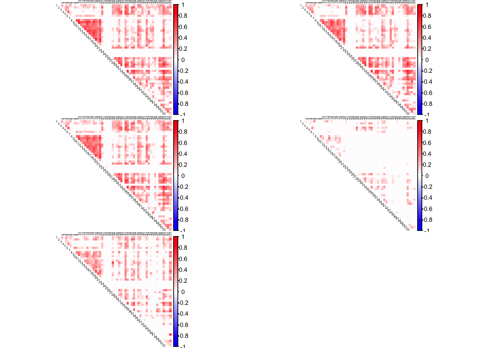
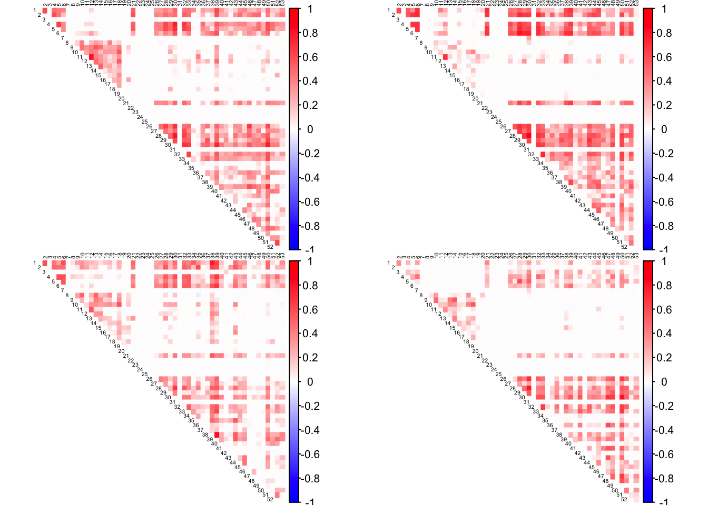
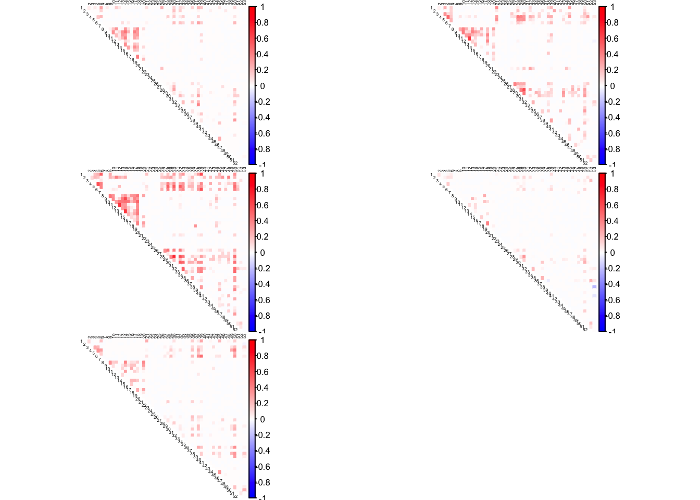

Last updated: 2019-01-20
workflowr checks: (Click a bullet for more information) ✖ R Markdown file: uncommitted changes
The R Markdown is untracked by Git. To know which version of the R Markdown file created these results, you’ll want to first commit it to the Git repo. If you’re still working on the analysis, you can ignore this warning. When you’re finished, you can run wflow_publish to commit the R Markdown file and build the HTML.
✔ Environment: empty
Great job! The global environment was empty. Objects defined in the global environment can affect the analysis in your R Markdown file in unknown ways. For reproduciblity it’s best to always run the code in an empty environment.
✔ Seed:
set.seed(20190114)
The command set.seed(20190114) was run prior to running the code in the R Markdown file. Setting a seed ensures that any results that rely on randomness, e.g. subsampling or permutations, are reproducible.
✔ Session information: recorded
Great job! Recording the operating system, R version, and package versions is critical for reproducibility.
✔ Repository version: acd824c
wflow_publish or wflow_git_commit). workflowr only checks the R Markdown file, but you know if there are other scripts or data files that it depends on. Below is the status of the Git repository when the results were generated:
Ignored files:
Ignored: .DS_Store
Ignored: .Rhistory
Ignored: .Rproj.user/
Ignored: data/BEDFILES/
Ignored: data/GO_annotations/
Ignored: data/GSEA/
Ignored: data/Pathways/
Untracked files:
Untracked: analysis/cluster_specific_patterns.Rmd
Untracked: code/annots_intersect_baselineLD.R
Untracked: code/single_tau_star.R
library(corrplot)corrplot 0.84 loadedk=19
genes <- as.character(read.table(paste0("data/gene_names_clus_", k, ".txt"))[1:6,1])
gene_names_gtex = as.character(read.table("data/gene_names_GTEX_V6.txt")[,1])
gene_names_gtex = as.character(sapply(gene_names_gtex, function(z) return(strsplit(z, "[.]")[[1]][1])))
matched_ids = match(genes, gene_names_gtex)corshrink_mat = get(load("data/CorShrink2Sparse_all_genes.rda"))The top six driving genes in Blood
genes[1] "ENSG00000244734" "ENSG00000188536" "ENSG00000206172" "ENSG00000105701"
[5] "ENSG00000223609" "ENSG00000013306"col2 <- c("blue", "white", "red")
par(mfrow=c(3,2))
for(m in 1:5){
corrplot(as.matrix(corshrink_mat[,,matched_ids[m]]), diag = FALSE,
col = colorRampPalette(col2)(200),
tl.pos = "td", tl.cex = 0.4, tl.col = "black",
rect.col = "white",na.label.col = "white",
method = "color", type = "upper")
}
The circadian genes picked up
circadian_genes = c("ENSG00000126368", "ENSG00000133794", "ENSG00000105516", "ENSG00000110090")
matched_ids = match(circadian_genes, gene_names_gtex)
col2 <- c("blue", "white", "red")
par(mfrow=c(2,2))
for(m in 1:4){
corrplot(as.matrix(corshrink_mat[,,matched_ids[m]]), diag = FALSE,
col = colorRampPalette(col2)(200),
tl.pos = "td", tl.cex = 0.4, tl.col = "black",
rect.col = "white",na.label.col = "white",
method = "color", type = "upper")
}
circadian_genes_2 = c(" ENSG00000179094", "ENSG00000134852", "ENSG00000121671",
"ENSG00000132326", "ENSG00000069667", "ENSG00000005812")
matched_ids = match(circadian_genes_2, gene_names_gtex)
matched_ids = matched_ids[!is.na(matched_ids)]
col2 <- c("blue", "white", "red")
par(mfrow=c(3,2))
for(m in 1:5){
corrplot(as.matrix(corshrink_mat[,,matched_ids[m]]), diag = FALSE,
col = colorRampPalette(col2)(200),
tl.pos = "td", tl.cex = 0.4, tl.col = "black",
rect.col = "white",na.label.col = "white",
method = "color", type = "upper")
}
sessionInfo()R version 3.5.1 (2018-07-02)
Platform: x86_64-apple-darwin15.6.0 (64-bit)
Running under: macOS High Sierra 10.13.6
Matrix products: default
BLAS: /Library/Frameworks/R.framework/Versions/3.5/Resources/lib/libRblas.0.dylib
LAPACK: /Library/Frameworks/R.framework/Versions/3.5/Resources/lib/libRlapack.dylib
locale:
[1] en_US.UTF-8/en_US.UTF-8/en_US.UTF-8/C/en_US.UTF-8/en_US.UTF-8
attached base packages:
[1] stats graphics grDevices utils datasets methods base
other attached packages:
[1] corrplot_0.84
loaded via a namespace (and not attached):
[1] workflowr_1.1.1 Rcpp_1.0.0 digest_0.6.18
[4] rprojroot_1.3-2 R.methodsS3_1.7.1 backports_1.1.2
[7] magrittr_1.5 git2r_0.23.0 evaluate_0.12
[10] stringi_1.2.4 whisker_0.3-2 R.oo_1.22.0
[13] R.utils_2.7.0 rmarkdown_1.10 tools_3.5.1
[16] stringr_1.3.1 yaml_2.2.0 compiler_3.5.1
[19] htmltools_0.3.6 knitr_1.20 This reproducible R Markdown analysis was created with workflowr 1.1.1